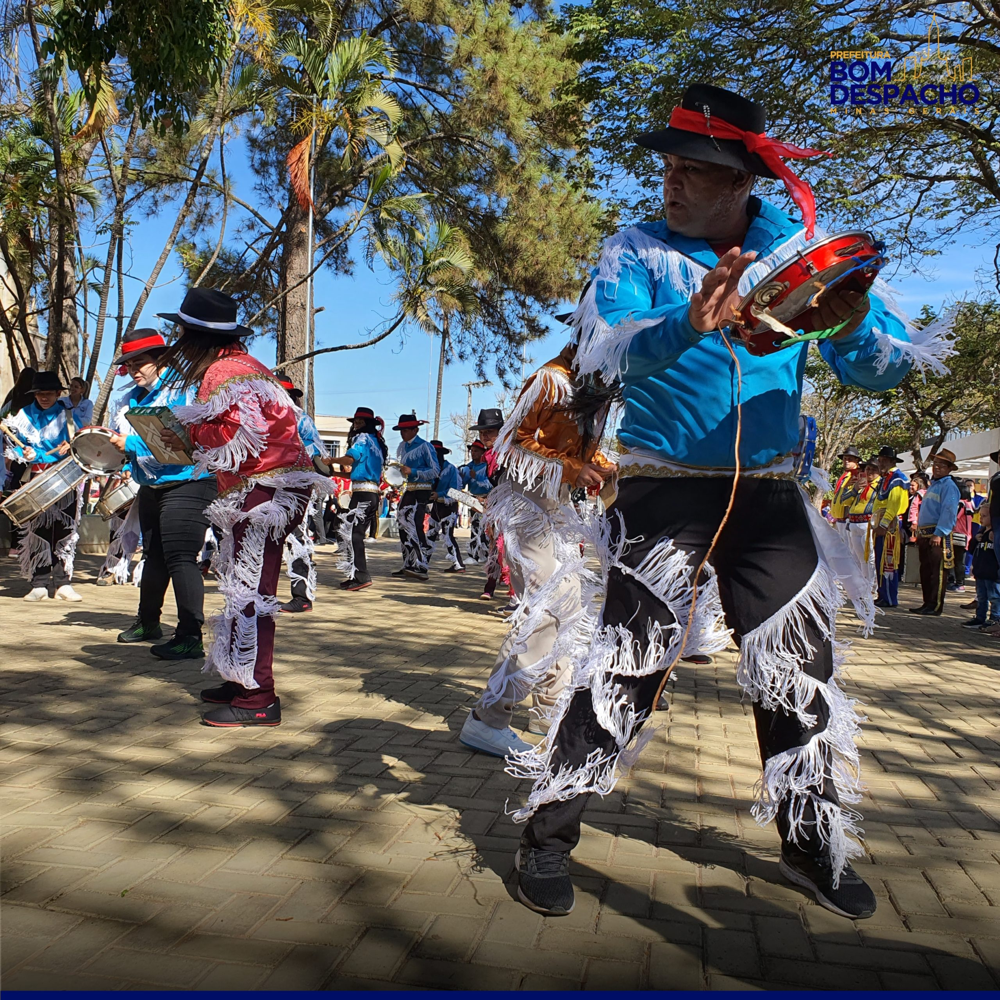

A Festa de Reinado é uma das manifestações culturais mais tradicionais do Brasil, especialmente em Minas Gerais.
Fonte da foto: Prefeitura de Bom Despacho
Ela tem origem nas celebrações afro-brasileiras e católicas, com cortejos coloridos, músicas típicas e o uso de bandeiras sagradas.
O evento reúne comunidades inteiras em torno de fé, resistência e memória ancestral.
As roupas são cuidadosamente preparadas, com reis, rainhas e guardas vestidos com trajes luxuosos e bordados.
A música, os tambores e os cantos são elementos essenciais da festa. Assita uma reportágem sobre a festa em Bom Despacho, MG..
Saiba mais sobre a Festa de Reinado e sua origem..